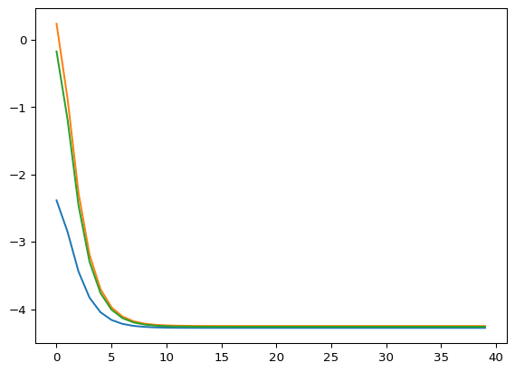

import hamux as hmx
import jax, jax.numpy as jnp, jax.random as jr, jax.tree_util as jtu
import equinox as eqx
from typing import *
import matplotlib.pyplot as pltHAMUX
A universal language for describing Associative Memories as hypergraphs
A new class of Deep Learning model built around ENERGY.

Part proof-of-concept, part functional prototype, HAMUX is designed to bridge modern AI architectures and Hopfield Networks.
HAMUX: A Hierarchical Associative Memory User eXperience.
Documentation. Also described in our tutorial on Associative Memory (ch. 3).
Quickstart
The code in this codebase is meant to be as minimal as possible. We do not provide a complete component library for associative memory. It consists of 1 main logic file (hamux/core.py) (<200 lines of important code), 1 file of example lagrangians (hamux/lagrangians.py) and 1 demo notebook: demo.ipynb. Intended for research code.
A Universal Abstraction for Hopfield Networks
HAMUX fully captures the the energy fundamentals of Hopfield Networks and enables anyone to:
ü߆ Build DEEP Hopfield nets
üß± With modular ENERGY components
üèÜ That resemble modern DL operations
Every architecture built using HAMUX is a formal Associative Memory (AM). That is, the architecture defines a tractable energy, whose minimization describes a dynamical system that is guaranteed to converge to a fixed point. Hierarchical Associative Memories (HAMs) have several additional advantages over traditional Hopfield Networks (HNs):
| Hopfield Networks (HNs) | Hierarchical Associative Memories (HAMs) |
|---|---|
| HNs are only two layers systems | HAMs connect any number of layers |
| HNs have limited storage capacity | HAMs can be used to describe Associative Memories with much denser storage |
| HNs model only simple relationships between layers | HAMs model any complex but differentiable operation (e.g., convolutions, pooling, attention, \(\ldots\)) |
| HNs use only pairwise synapses | HAMs can also use many-body synapses (which we denote HyperSynapses) |
How does HAMUX work?

See our walkthrough in this notebook for a more detailed explanation of how everything works.
In summary, this library handles all the complexity of scaling modular, learnable energy functions that interconnect many layers and hypersynapses. It is a barebones framework to explore Associative Memories that look like Deep Learning architectures.
- Implement your favorite Deep Learning operations as a HyperSynapse
- Port over your favorite activation functions as Lagrangians
- Connect layers and hypersynapses into a hypergraph with a single total energy.
- Easily use autograd for descending states.
Installation
Install latest from the GitHub repo
$ pip install git+https://github.com/bhoov/hamux.gitor from pypi
pip install hamuxHow to use
class LinearSynapse(eqx.Module):
"""The energy synapse corrolary of the linear layer in standard neural networks"""
W: jax.Array
def __call__(self, xhat1:jax.Array, xhat2:jax.Array):
return xhat1 @ self.W @ xhat2
@classmethod
def rand_init(cls, key: jax.Array, D1: int, D2: int):
Winit = 0.02 * jr.normal(key, (D1, D2))
return cls(W=Winit)
key = jr.key(0)
nhid = 9
nlabel = 8
ninput = 7
neurons = {
"input": hmx.NeuronLayer(hmx.lagr_identity, (ninput,)),
"labels": hmx.NeuronLayer(hmx.lagr_softmax, (nlabel,)),
"hidden": hmx.NeuronLayer(hmx.lagr_softmax, (nhid,))
}
synapses = {
"dense1": LinearSynapse.rand_init(key, ninput, nhid),
"dense2": LinearSynapse.rand_init(key, nlabel, nhid)
}
connections = [
(("input", "hidden"), "dense1"),
(("labels", "hidden"), "dense2")
]
ham = hmx.HAM(neurons, synapses, connections)xs = ham.init_states() # No batch size
xhats = ham.activations(xs)
ham.energy_tree(xhats, xs)
ham.energy(xhats, xs)
ham.dEdact(xhats, xs){'hidden': Array([ 0.00705259, 0.00320656, -0.02189678, 0.00424237, 0.00248319,
-0.00192548, 0.00498188, 0.00388546, 0.00415148], dtype=float32),
'input': Array([ 0.00667361, 0.00921866, 0.00110246, -0.00476699, -0.0013505 ,
-0.00371795, -0.00420904], dtype=float32),
'labels': Array([ 0.00667361, 0.00921866, 0.00110246, -0.00476699, -0.0013505 ,
-0.00371795, -0.00420904, 0.00254421], dtype=float32)}vham = ham.vectorize()
bs = 3
xs = vham.init_states(bs) # Batch size 3
xhats = vham.activations(xs)
print(vham.energy_tree(xhats, xs))
print(vham.energy(xhats, xs))
print(vham.dEdact(xhats, xs))
ham = vham.unvectorize(){'connections': [Array([0., 0., 0.], dtype=float32), Array([0.00068681, 0.00068681, 0.00068681], dtype=float32)], 'neurons': {'hidden': Array([-2.1972246, -2.1972246, -2.1972246], dtype=float32), 'input': Array([0., 0., 0.], dtype=float32), 'labels': Array([-2.0794415, -2.0794415, -2.0794415], dtype=float32)}}
[-4.275979 -4.275979 -4.275979]
{'hidden': Array([[ 0.00705259, 0.00320656, -0.02189678, 0.00424237, 0.00248319,
-0.00192548, 0.00498188, 0.00388546, 0.00415148],
[ 0.00705259, 0.00320656, -0.02189678, 0.00424237, 0.00248319,
-0.00192548, 0.00498188, 0.00388546, 0.00415148],
[ 0.00705259, 0.00320656, -0.02189678, 0.00424237, 0.00248319,
-0.00192548, 0.00498188, 0.00388546, 0.00415148]], dtype=float32), 'input': Array([[ 0.00667361, 0.00921866, 0.00110246, -0.00476699, -0.0013505 ,
-0.00371795, -0.00420904],
[ 0.00667361, 0.00921866, 0.00110246, -0.00476699, -0.0013505 ,
-0.00371795, -0.00420904],
[ 0.00667361, 0.00921866, 0.00110246, -0.00476699, -0.0013505 ,
-0.00371795, -0.00420904]], dtype=float32), 'labels': Array([[ 0.00667361, 0.00921866, 0.00110246, -0.00476699, -0.0013505 ,
-0.00371795, -0.00420904, 0.00254421],
[ 0.00667361, 0.00921866, 0.00110246, -0.00476699, -0.0013505 ,
-0.00371795, -0.00420904, 0.00254421],
[ 0.00667361, 0.00921866, 0.00110246, -0.00476699, -0.0013505 ,
-0.00371795, -0.00420904, 0.00254421]], dtype=float32)}We can check that the energy descent using randomize weights behaves as expected.
# Randomize the initial states
rkey = jr.key(42)
key_tree = dict(zip(xs.keys(), jr.split(rkey, len(xs))))
xs = jtu.tree_map(lambda key, x: jr.normal(key, x.shape), key_tree, xs)
xhats = vham.activations(xs)
nsteps = 40
step_size = 0.5
energies = jnp.empty((nsteps, bs))
for i in range(nsteps):
energy, dEdxhats = vham.dEdact(xhats, xs, return_energy=True)
energies = energies.at[i].set(energy)
xs = jtu.tree_map(lambda x, u: x - step_size * u, xs, dEdxhats)
plt.plot(jnp.arange(nsteps), energies)
See the nbs/_examples directory for more examples.
Developing locally
uv (in pyproject.toml) handles all dependencies, nbdev (and its settings.ini) handles all packaging. We handle syncing between the pyproject.toml and settings.ini files using scripts/sync_dependencies.py.
Warning
Package is currently based on a fork of nbdev that allows development in plain text .qmd files.
Prerequisite: Download ‘uv’
uv sync
uv run uv pip install -e .
# OPTIONAL: Add GPU enabled JAX e.g., for CUDA 12
uv run uv pip install -U "jax[cuda12]"
source .venv/bin/activate
nbdev_prepareuv sync
source .venv/bin/activate
# Make changes to source files in `nbs/`.
uv run nbdev_prepare # Before committing changes, export and test library
uv run nbdev_preview # Preview docsVSCode for developmentautomatic library export
Never let your
.qmdsource get out of sync with your.pylibrary.
VSCode has an excellent interactive mode for developing quarto files. We install the Run on Save extension to keep the .qmd files in sync with the .py library, removing the need for explicit nbdev_export commands.
To accomplish this, copy and paste the following into your user/workspace settings (Cmd+Shift+P then either “Preferences: Open User settings (JSON)” or “Preferences: Open Workspace settings (JSON)”)
{
"files.watcherExclude": {
"**/.git/objects/**": true,
"**/.git/subtree-cache/**": true,
"**/node_modules/*/**": true,
"**/.hg/store/**": true,
},
"emeraldwalk.runonsave": {
"commands": [
{
"match": "nbs/.*\\.qmd$", // Replace with your own nbs/ directory
"cmd": "source ${workspaceFolder}/.venv/bin/activate && nbdev_export", // Replace with a path to your python env where `nbdev` is installed
}
]
}
}